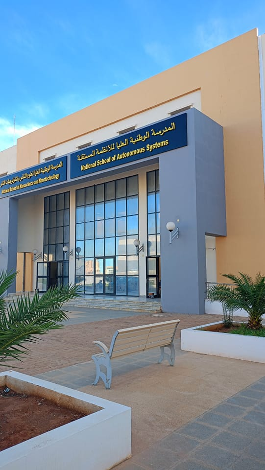
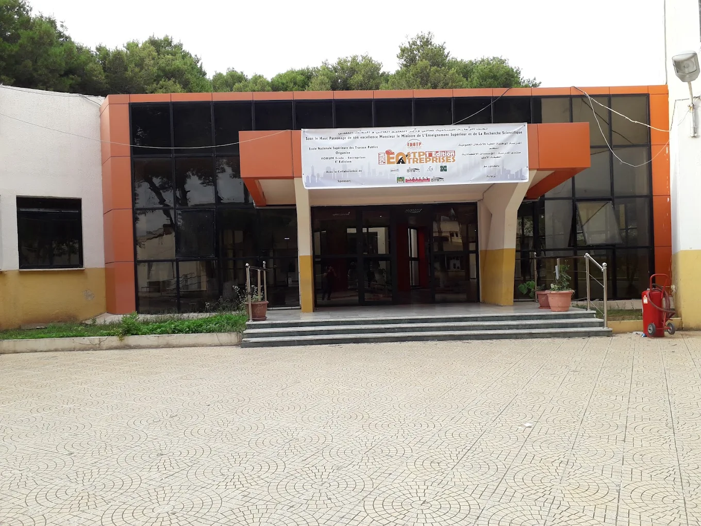
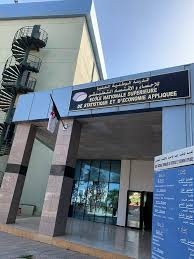
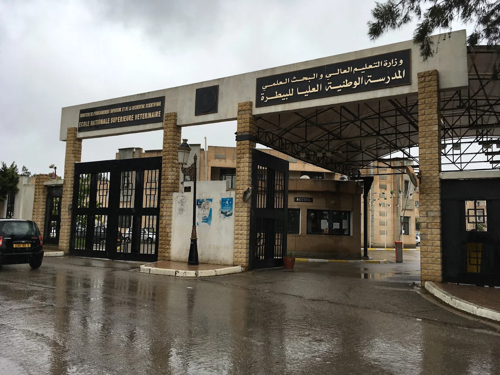
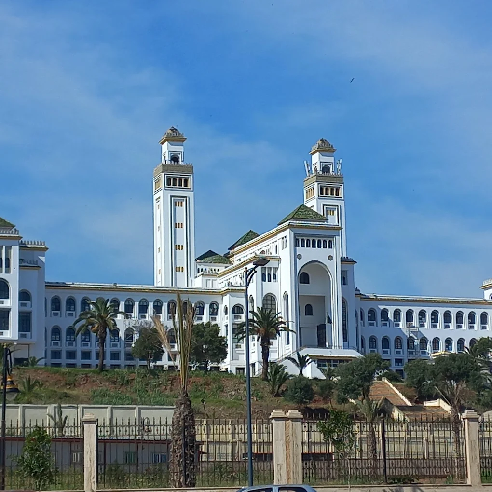

التخصصات الجامعية

المدرسة العليا لعلوم وتكنولوجيات الإعلام الآلي والرقمنة – ESTIN
هندسة

المدرسة العليا للذكاء الإصطناعي – ENSIA
هندسة

المدرسة العليا للأمن السيبيراني – ENSCS
هندسة

المدرسة الوطنية العليا للاتصالات وتكنولوجيا الإعلام – ENSTTIC
هندسة

المدرسة الوطنية العليا للرياضيات – NHSM
علوم

المدرسة الوطنية متعددة التقنيات – POLYTECH
هندسة

المدرسة متعددة التقنيات للهندسة المعمارية والعمران – EPAU
هندسة

المدرسة العليا في علوم النانو وتكنولوجيا النانو – ENSSN
علوم

المدرسة العليا للأنظمة المستقلة – ENSAS
هندسة

المدرسة العليا للأشغال العمومية – ENSTP
هندسة

معهد الإلكترونيك بومرداس – IGEE
هندسة

المدرسة العليا للتجارة – ENSC
اقتصاد

المدرسة العليا للدراسات التجارية – EHEC
اقتصاد

المدرسة العليا للتسيير والاقتصاد الرقمي – ESGEN
اقتصاد

المدرسة الوطنية العليا للإحصاء والاقتصاد التطبيقي – ENSSEA
اقتصاد

المدرسة العليا لعلوم التغذية والصناعات الغذائية – ESSAIA
علوم

المدرسة العليا للفلاحة – ENSA
علوم

المدارس العليا للأساتذة – ENS
تربية
.jpeg)
تخصص الطب – MÉDECINE
طب وصحة

تخصص طب الأسنان – MÉDECINE DENTAIRE
طب وصحة

تخصص الصيدلة – PHARMACIE
طب وصحة

تخصصات الشبه طبي – PARAMEDICAL
طب وصحة

تخصص الصيدلة الصناعية – PHARMACIE INDUSTRIELLE
طب وصحة

تخصص الطب البيطري – Vétérinaire
طب وصحة

المدرسة العليا للبيوتكنولوجيا – ENSB
علوم

المدرسة الوطنية العليا لعلوم البحر وتهيئة الساحل – ENSSMAL
علوم

تخصص الشريعة الإسلامية
تربية

تخصص الإعلام الآلي – INFORMATIQUE
علوم

تخصص الرياضيات – MATH
علوم

تخصص علوم وتكنولوجيا – ST
علوم

تخصص علوم المادة – SM
علوم

تخصص البيولوجيا – BIOLOGIE
علوم

تخصص المحروقات – HYDROCARBURES
علوم

تخصص البصريات وميكانيك الدقة – Optique & Mécanique
علوم
لا توجد نتائج مطابقة لبحثك


.jpeg)


.jpeg)